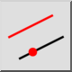

평행(포인트 통과)
도구 모음 / 아이콘:


메뉴: 그리기 > 라인 > 평행(포인트 통과)
바로 가기: L, G
명령: lineparallelthrough | lineoffsetthrough | parallelthrough | lg
이것은 자동 번역입니다.
도구 모음 / 아이콘:


이 도구를 사용하면 기존 선에 평행한 선 또는 동심 호와 원을 만들 수 있습니다. 평행 또는 동심 호나 원은 주어진 점을 통과합니다.